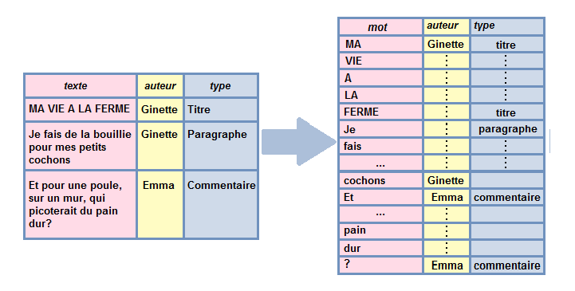

Chapitre 4 Langage naturel
Reprenons pour cette partie la table des commentaires du blog fictif “Ma vie à la ferme” (présenté dans le chapitre 2). Cette table est accessible depuis cette adresse.
tibtot_commentaires <- readr::read_csv("data/tibtot_commentaires.csv")
tibtot_commentaires## # A tibble: 12 × 3
## doc texte auteur
## <chr> <chr> <chr>
## 1 data/blog_de_ginette.htm Et pour une poule sur un mur qui picoterai… Emma,…
## 2 data/blog_de_ginette.htm Je vois que vous êtes, telle la petite pou… Miche…
## 3 data/blog_de_jean-marc.htm Les thons, avec un t comme crocodile? ou l… Eddie…
## 4 data/blog_de_jean-marc.htm Pourquoi ces thons ne préféraient-ils pas … Yves,…
## 5 data/blog_de_jean-marc.htm Tout ça me fait penser au blog de Ginette … Rober…
## 6 data/blog_de_jean-marc.htm Je préfère la chanson qui parle de canards… Eduar…
## 7 data/blog_de_jean-marc.htm On ne comprend pas trop cette passion pour… Lise,…
## 8 data/blog_de_jean-marc.htm Et pendant ce temps-là, le roi des thons, … Nadia…
## 9 data/blog_de_norbert.htm A quel moment faut-il claquer du bec, si l… Jonas…
## 10 data/blog_de_norbert.htm Norbert, mon petit chat, ça fait bien long… Julie…
## 11 data/blog_de_norbert.htm L'ambiance doit être sympa quand les poule… Micka…
## 12 data/blog_de_norbert.htm Vous devez avoir un grain pour écrire des … Vivia…4.1 Tokenization
4.1.1 Principe

On va maintenant passer à l’étape de tokenisation de nos textes.
Tokeniser, ça revient à définir de quelle manière on découpe nos textes pour les analyses ultérieures.
Par exemple, on peut décider que l’unité d’analyse (l’individu) pour nos analyses textuelles seront un des éléments suivants:
- la phrase
- le n-gram
- le mot
- etc.
4.1.2 Mise en oeuvre
Pour réaliser cette tokenisation nous allons utiliser le package tidytext
 et notamment sa fonction
et notamment sa fonction unnest_tokens().
tibtot_commentaires %>%
tidytext::unnest_tokens(output="bigramme",
input=texte,
token="ngrams",
n=2)## # A tibble: 207 × 3
## doc auteur bigramme
## <chr> <chr> <chr>
## 1 data/blog_de_ginette.htm Emma, 22 ans, Limoges et pour
## 2 data/blog_de_ginette.htm Emma, 22 ans, Limoges pour une
## 3 data/blog_de_ginette.htm Emma, 22 ans, Limoges une poule
## 4 data/blog_de_ginette.htm Emma, 22 ans, Limoges poule sur
## 5 data/blog_de_ginette.htm Emma, 22 ans, Limoges sur un
## 6 data/blog_de_ginette.htm Emma, 22 ans, Limoges un mur
## 7 data/blog_de_ginette.htm Emma, 22 ans, Limoges mur qui
## 8 data/blog_de_ginette.htm Emma, 22 ans, Limoges qui picoterait
## 9 data/blog_de_ginette.htm Emma, 22 ans, Limoges picoterait du
## 10 data/blog_de_ginette.htm Emma, 22 ans, Limoges du pain
## # … with 197 more rowstib_mots=tibtot_commentaires %>%
tidytext::unnest_tokens(output="mot",
input=texte,
token="words")
tib_mots## # A tibble: 219 × 3
## doc auteur mot
## <chr> <chr> <chr>
## 1 data/blog_de_ginette.htm Emma, 22 ans, Limoges et
## 2 data/blog_de_ginette.htm Emma, 22 ans, Limoges pour
## 3 data/blog_de_ginette.htm Emma, 22 ans, Limoges une
## 4 data/blog_de_ginette.htm Emma, 22 ans, Limoges poule
## 5 data/blog_de_ginette.htm Emma, 22 ans, Limoges sur
## 6 data/blog_de_ginette.htm Emma, 22 ans, Limoges un
## 7 data/blog_de_ginette.htm Emma, 22 ans, Limoges mur
## 8 data/blog_de_ginette.htm Emma, 22 ans, Limoges qui
## 9 data/blog_de_ginette.htm Emma, 22 ans, Limoges picoterait
## 10 data/blog_de_ginette.htm Emma, 22 ans, Limoges du
## # … with 209 more rows4.2 Nettoyage de la table

- retirer les mots vides
- extraire la racine des mots ou le lemme (stemming, lemmatisation)
- retirer la ponctuation
- retirer certains mots ou expressions
- changer la casse (passer majuscules en minuscules)
- retirer les liens, les “hashtags”, les emojis, etc.
- etc.
4.2.1 Nettoyage de la table par suppression des mots vides
Pour des textes en anglais, tidytext comprend une liste de mots vides (“stopwords”)
tidytext::stop_words## # A tibble: 1,149 × 2
## word lexicon
## <chr> <chr>
## 1 a SMART
## 2 a's SMART
## 3 able SMART
## 4 about SMART
## 5 above SMART
## 6 according SMART
## 7 accordingly SMART
## 8 across SMART
## 9 actually SMART
## 10 after SMART
## # … with 1,139 more rowsPour un texte en français, on peut avoir recours au package proustr lien ici
proustr::proust_stopwords()## # A tibble: 689 × 1
## word
## <chr>
## 1 a
## 2 abord
## 3 absolument
## 4 afin
## 5 ah
## 6 ai
## 7 aie
## 8 aient
## 9 aies
## 10 ailleurs
## # … with 679 more rowsPour ne garder que les mots signifiants, on peut ainsi faire une anti-jointure entre notre table et la table renvoyée par proust_stopwords():
tib_mots_nonvides <- tib_mots %>%
anti_join(proustr::proust_stopwords(),by=c("mot"="word"))
tib_mots_nonvides## # A tibble: 88 × 3
## doc auteur mot
## <chr> <chr> <chr>
## 1 data/blog_de_ginette.htm Emma, 22 ans, Limoges poule
## 2 data/blog_de_ginette.htm Emma, 22 ans, Limoges mur
## 3 data/blog_de_ginette.htm Emma, 22 ans, Limoges picoterait
## 4 data/blog_de_ginette.htm Emma, 22 ans, Limoges pain
## 5 data/blog_de_ginette.htm Emma, 22 ans, Limoges dur
## 6 data/blog_de_ginette.htm Emma, 22 ans, Limoges c'est
## 7 data/blog_de_ginette.htm Emma, 22 ans, Limoges nourrir
## 8 data/blog_de_ginette.htm Emma, 22 ans, Limoges petits
## 9 data/blog_de_ginette.htm Emma, 22 ans, Limoges cochons
## 10 data/blog_de_ginette.htm Emma, 22 ans, Limoges qu'en
## # … with 78 more rows4.2.2 Nettoyage de la table par racinisation (stemming)
La racinisation (ou désuffixation, ou stemming en anglais) consiste (comme son nom l’indique) à extraire la racine d’un mot. Souvent, cette racine ne correspond pas à un “vrai mot”…
proustr::pr_stem_words(tib_mots_nonvides,mot)## # A tibble: 88 × 3
## doc auteur mot
## * <chr> <chr> <chr>
## 1 data/blog_de_ginette.htm Emma, 22 ans, Limoges poul
## 2 data/blog_de_ginette.htm Emma, 22 ans, Limoges mur
## 3 data/blog_de_ginette.htm Emma, 22 ans, Limoges picot
## 4 data/blog_de_ginette.htm Emma, 22 ans, Limoges pain
## 5 data/blog_de_ginette.htm Emma, 22 ans, Limoges dur
## 6 data/blog_de_ginette.htm Emma, 22 ans, Limoges c'est
## 7 data/blog_de_ginette.htm Emma, 22 ans, Limoges nourr
## 8 data/blog_de_ginette.htm Emma, 22 ans, Limoges petit
## 9 data/blog_de_ginette.htm Emma, 22 ans, Limoges cochon
## 10 data/blog_de_ginette.htm Emma, 22 ans, Limoges qu'en
## # … with 78 more rows4.2.3 Nettoyage de la table par lemmatisation
La lemmatisation consiste faire correspondre à un mot (ou forme) la forme neutre (ou lemme) que ce mot aurait par exemple par défaut dans un dictionnaire. Pour un nom, cela serait la forme au masculin singulier par exemple; pour un verbe conjugué, ce serait l’infinitif.
Il est possible de lemmatiser en utilisant l’outil TreeTagger (gratuit, mais propriétaire). Cet outil est utilisable dans R via le package koRpus vignette ici
Pour ma part, je lemmatise la plupart du temps en me basant sur une base de données lexicales libre, Lexique qui fait correspondre formes et lemmes de très nombreux mots en français. J’ai réalisé une simple jointure, sans considération syntaxique.
lexique382=mixr::get_lexicon("fr")
dplyr::sample_n(lexique382,10)## # A tibble: 10 × 3
## word lemma type
## <chr> <chr> <chr>
## 1 détournait détourner ver
## 2 happy_end happy_end nom
## 3 rembourrés rembourrer ver
## 4 pestilentielle pestilentiel adj
## 5 glanée glaner ver
## 6 scoutisme scoutisme nom
## 7 khalife khalife nom
## 8 malmenés malmener ver
## 9 chopaient choper ver
## 10 réconfortés réconforter verDans ce cas on réalise une jointure pour récupérer le lemme de chaque mot dans notre table:
tib_mots_nonvides <- dplyr::left_join(tib_mots_nonvides,
lexique382,
by=c("mot"="word"))
tib_mots_nonvides %>%
dplyr::select(mot,lemma)## # A tibble: 88 × 2
## mot lemma
## <chr> <chr>
## 1 poule poule
## 2 mur mur
## 3 picoterait <NA>
## 4 pain pain
## 5 dur dur
## 6 c'est <NA>
## 7 nourrir nourrir
## 8 petits petit
## 9 cochons cochon
## 10 qu'en <NA>
## # … with 78 more rows